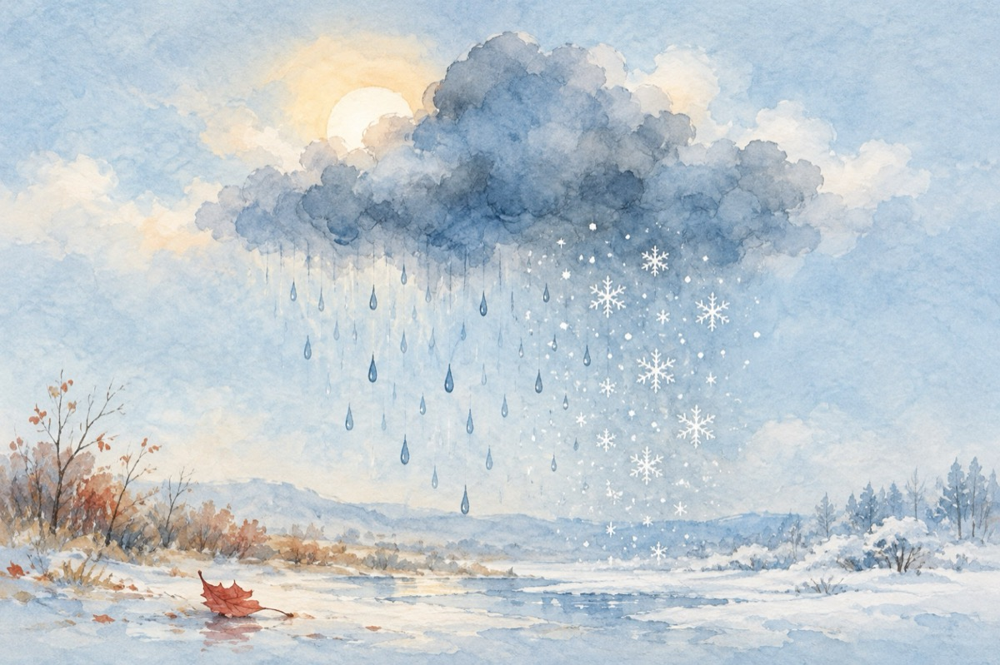

Și toate vin și toate trec
Pe patul de spital Municipal. După operația la genunchi.
Cad picăturile pic, pic, pic, pic
Și norii peste noi au dat năvală
De soare nu mai știm nimic
Și-aproape nu-ndrăznim să mai ieșim afară.
Se pare chiar că în curând
Când ploaia își va pierde rostul
Să ne trezim cu norii des ningând
Și iarna ocupându-și postul.
Dar asta nu înseamnă totul
El, timpul, va fi mult mai sever
Și nu că va veni potopul
Ci frigu-nmănușat de aspru ger!
Și toate vin și toate trec
Cum viața însăși trece
Cum anotimpurile se întrec
Și noi cu ele viața ne-om petrece!...
Vasile Groza